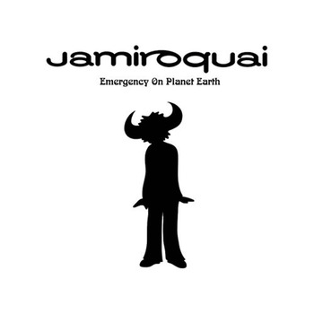

 emergency on planet earth (1993) Jamiroquai's debut album set the stage for their eclectic fusion of funk and acid jazz. With socially conscious lyrics addressing environmental issues, the album featured tracks like "When You Gonna Learn" and "Emergency on Planet Earth".
synkronized (1999) "Synkronized" marked a transition for Jamiroquai, incorporating electronic influences into their funk-driven sound. Tracks like "Canned Heat" and "Supersonic" reflected the band's ability to evolve while maintaining their signature groove, making it a dynamic addition to their discography.
dynamite (2005) "Dynamite" represented a fusion of funk, rock, and pop elements, showcasing the band's versatility. Tracks like "Feels Just Like It Should" and "Seven Days in Sunny June" displayed Jamiroquai's ability to experiment with different sounds while maintaining their infectious energy.
return of the space cowboy (1994) This album marked a pivotal moment in Jamiroquai's evolution, exploring themes of space and identity. Tracks like "Space Cowboy" and "Travelling Without Moving" showcased a seamless blend of funk, soul, and acid jazz, solidifying the band's reputation for genre-defying music.
automaton (2017) After a hiatus, Jamiroquai made a triumphant return with "Automaton." The album seamlessly blended their classic funk sound with contemporary electronic influences. Tracks like the title song "Automaton" and "Cloud 9" reflected a modernized yet distinctly Jamiroquai sound, reaffirming their relevance.
travelling without moving (1996) Considered a breakthrough album, "Travelling Without Moving" propelled Jamiroquai to global stardom. The infectious hit "Virtual Insanity" and other tracks like "Cosmic Girl" showcased a futuristic sound, complemented by Jay Kay's soulful vocals and the band's tight instrumentation.